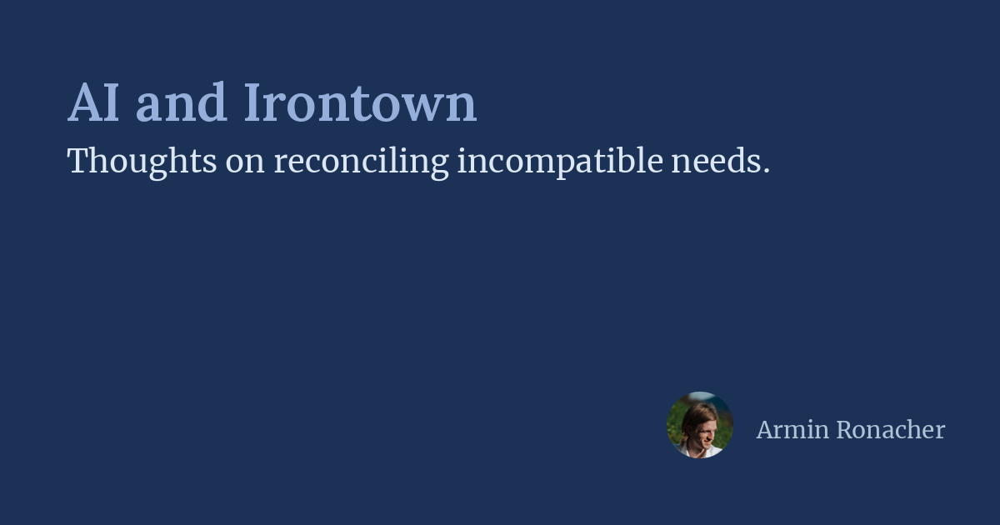
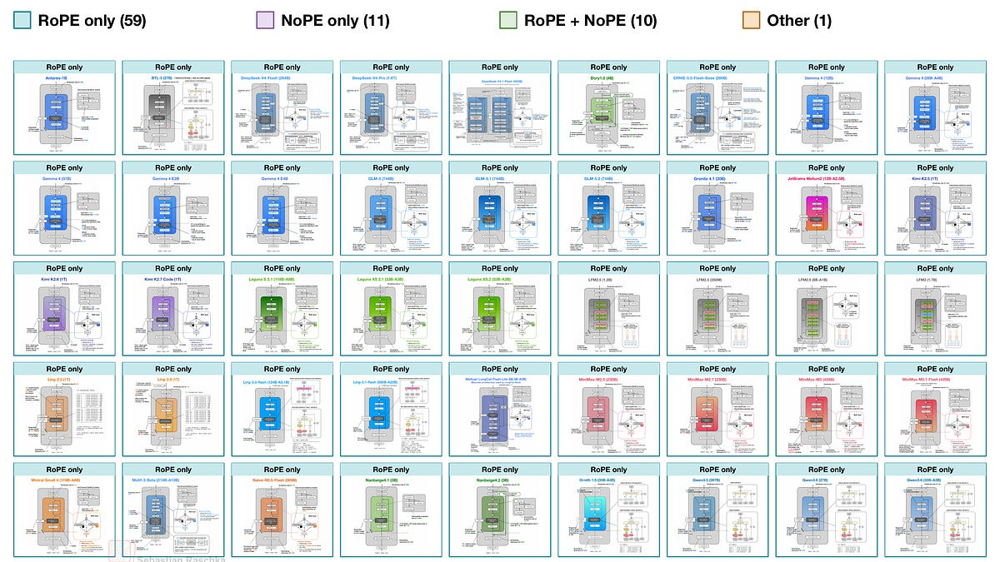
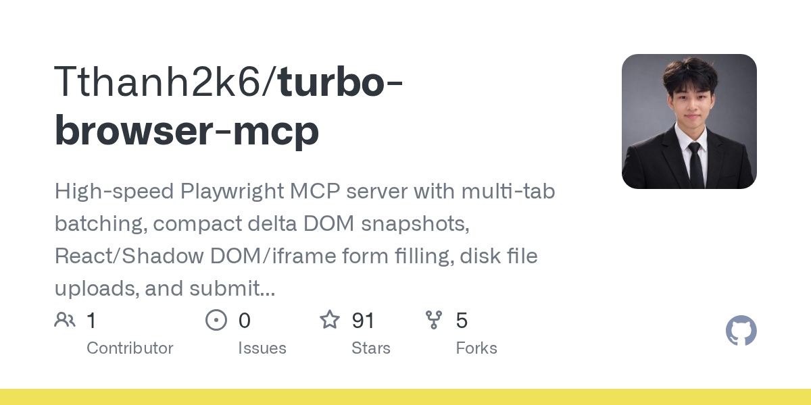
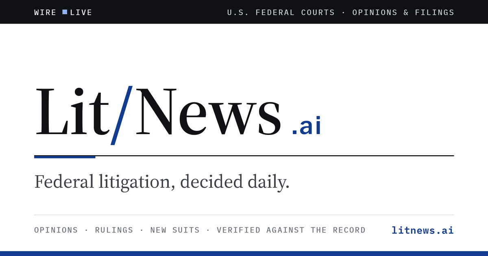
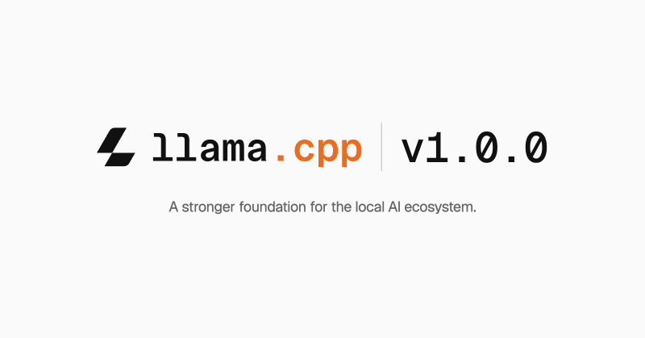
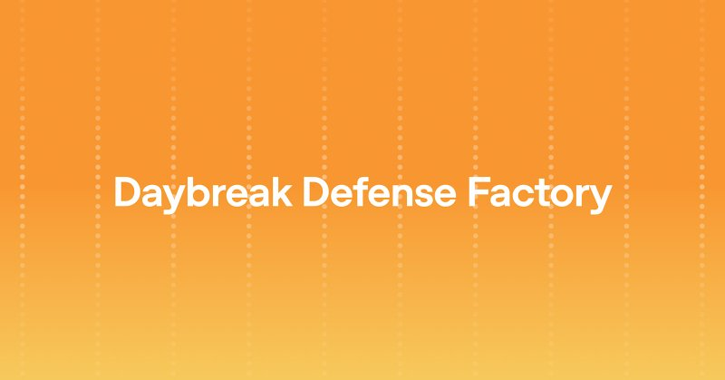
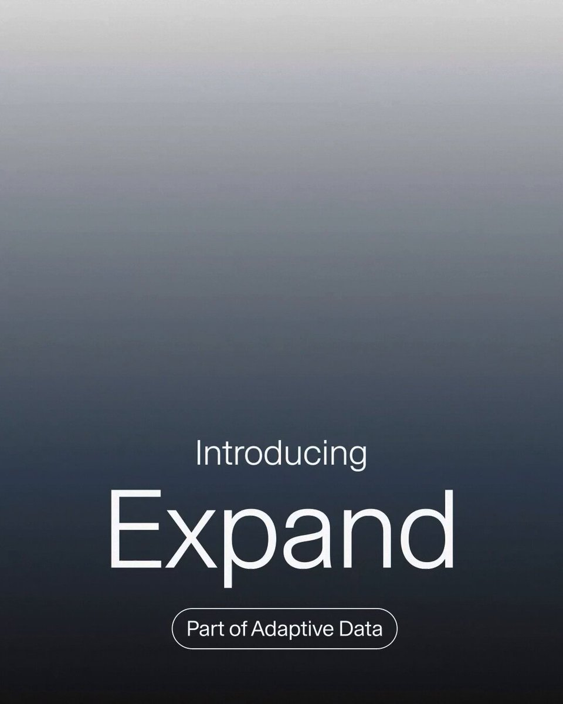

01
Armin Ronacher 呼吁全面看待 AI 的收益与代价

Armin Ronacher 借《幽灵公主》的炼铁镇比喻 AI 带来的赋能与外部代价。他肯定日常使用 AI 的收益，同时关注伤害、道德矛盾及不理解后果却追求力量的危险。这篇评论呼吁承认不同群体的利益与仍可做出的选择。
每天一次，过滤 AI 噪音

Armin Ronacher 借《幽灵公主》的炼铁镇比喻 AI 带来的赋能与外部代价。他肯定日常使用 AI 的收益，同时关注伤害、道德矛盾及不理解后果却追求力量的危险。这篇评论呼吁承认不同群体的利益与仍可做出的选择。

《纽约时报》对 Anthropic IPO 文件的分析进入今日 Hacker News。采集记录只有标题和链接，没有文件中的财务细节，因此这里不推断估值或收入数字。该报道关系到大型 AI 公司如何向投资者解释业务。

一篇主张所有 AI 生成代码都应开源的文章，在采集时获得 Hacker News 196 分和 131 条评论。这是作者的规范性主张，并不是现行法律要求或已经确定的许可证规则。讨论反映了开发者对代码归属与开放性的关注。

Sebastian Raschka 发布现代语言模型位置嵌入指南，涵盖从零实现 RoPE，以及 NoPE、部分 RoPE 与混合设计。原文在采集时获得 Hacker News 86 分，适合希望理解序列位置信息与架构选择的读者。
《纽约时报》报道称 Howard Lutnick 曾推动放宽与其家族业务有交集的芯片规则。该条目在 Hacker News 获得 169 分和 62 条评论。采集内容未说明具体规则或最终处理结果，报道重点涉及半导体政策与潜在利益冲突。

Turbo Browser MCP 在 Show HN 中介绍了表单批量操作、DOM 差量与提交保护功能，采集时获得 44 分和 8 条评论。这些功能针对智能体浏览器操作的常见问题，但采集内容没有独立可靠性测试，实际适用性仍需查阅项目。

一则法院拒绝驳回 DRAM 价格操纵案件的报道，在采集时获得 Hacker News 360 分和 151 条评论，涉及 Samsung、SK Hynix 和 Micron。案件继续审理属于程序进展，并不等于认定责任。内存市场的竞争与价格关系到计算基础设施。

Sebastian Raschka 指出，Inkling 2 Small 使用类似 Kimi K3 的注意力残差，但没有采用线性注意力混合架构。他将其视为年末模型架构趋势分析的重要案例。这里的重点是架构选择，而非新的性能测试结论。

Nathan Lambert 认为，开放模型生态面临华盛顿政策支持减弱和更快实现商业盈利的双重压力。这是他对生态风险的判断，并非已经确认的撤资公告。开放模型的发展除了技术进步，也依赖机构支持与商业可持续性。

Claude 开发者账号宣布，Claude Code 桌面版可通过 mods 自定义颜色和动画背景，并提供主题示例插件。用户也可以直接描述希望的外观。这项更新扩展了编码工具的界面定制能力，公告并未表明底层模型的编码性能发生变化。

Thomas Wolf 赞赏 NVIDIA 的 GR00T 2 开放权重机器人模型，并表示 LeRobot 集成正在进行。该消息说明生态对接的方向，并不代表集成已经完成，也不是独立性能评估。对机器人开发者而言，开放工具链决定了模型能否方便地用于实验。

Nathan Lambert 将模型规范视为组织内部对齐与轻量外部监督的工具，并指出智能体越自主，其重要性越高。这是一项治理观察，而不是新规范发布。随着 AI 从生成文本走向实际行动，明确的行为要求成为评估系统的重要依据。
Greg Brockman 表示，dot 通过与 American Express、Mastercard 和 Visa 合作支持安全购物。采集到的公告没有说明交易额度、覆盖地区或实现细节。这表明智能体商业应用正在从推荐商品走向支付与执行。

Thomas Wolf 转发了 llama.cpp 创建者 Georgi Gerganov 的发布消息，宣布 1.0.0 已可用。采集内容没有列出具体变更或性能比较。使用本地模型推理的开发者可关注这一版本里程碑，并在升级前核对项目说明与接口兼容性。

Runway 宣布平台已支持 Seedance 2.5 Flash，并称其视频生成速度更快、成本更低。公告未给出具体价格或耗时数据，因此这些比较仍属于厂商表述。对创作者而言，这增加了现有工作流中的模型选择。

Greg Brockman 宣布 Daybreak Defense Factory 和 Daybreak Red Team，表示两者旨在将前沿网络安全能力用于企业防御。采集公告没有提供评估结果、准入条件或部署要求。其意义在于将模型能力包装成明确的防御与红队工作流。

Anthropic 开发者账号发布关于 API 模型上线与配套功能的视频，强调升级模型时应重新审视执行框架，并衡量单项任务成本。公告没有给出量化比较，但提醒开发者：编排与评估方式会影响新模型的实际使用经济性。

Google 推出 Gemini 4 Hydrogen，面向日常编码与智能体任务，提供四档思考级别，并可与 Carbon 和 Argon 配合。Google 宣称其速度为 3.8 Flash 的 2.5 倍；此处是厂商声明，而非独立测试结论。

Sara Hooker 介绍 Adaption 的 Expand 功能：根据已有样本的主题和领域扩充训练数据，并宣称可在数小时内从二十条扩展到十万条。公告未提供质量或下游准确率结果，其价值仍取决于扩充数据与目标的一致性和评估。
AG UI 是用于将智能体接入前端应用的交互协议项目。该 TypeScript 仓库进入采集到的 GitHub 趋势列表，拥有 17,650 星，并在报告日期有更新。它关注智能体执行与用户界面之间的连接；热度本身不能证明生产可靠性。

Univer 提供基于可扩展开源核心的办公 SDK，支持编辑、计算、协作和文件处理，面向用户与 AI 智能体。采集时该 TypeScript 项目拥有 25,351 星。实际部署要求与功能覆盖仍需结合项目文档确认。